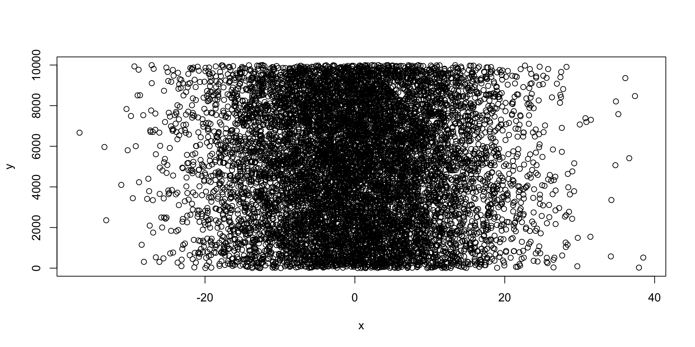
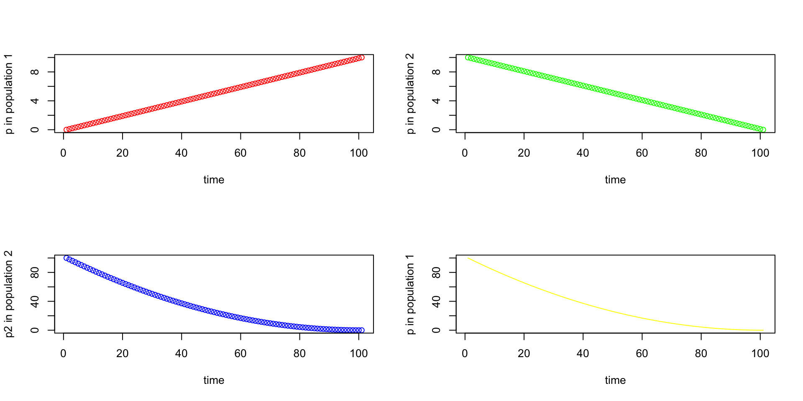

R and Python Fundamentals 2: Data Frames, Distributions and Figures
2026-11-02
The course book goes deeper on everything in this lecture. Read before or after class:
R is being able to import data from an external sourceR.pd.read_csv() for comma-separated, pd.read_csv(sep="\t") for tab-separated; pathlib.Path builds paths that work on every operating systemrng = np.random.default_rng(2026) (the number is the seed, like set.seed(2026) in R)dnorm() generates the probability density, which can be plotted using the curve() function.add=TRUEnorm.pdf() from scipy.stats is the density; every plt. call draws on the same figure until plt.show()hist function.plot function (as well as a number of more sophisticated plotting functions).high level plotting function, which sets the stageLow level plotting functions will tweak the plots and make them beautifulR is that the options for the arguments make sense.GGPlot2 for nice scientific graphicsmatplotlib (plt.plot, plt.scatter, plt.hist); seaborn and plotnine (a ggplot2 clone) sit on top of itplt.subplots(2, 2) does the same job and hands back a grid of axes to draw onpar(mfrow=c(2,2))
plot (seq_1, xlab="time", ylab ="p in population 1", type = "p", col = 'red')
plot (seq_2, xlab="time", ylab ="p in population 2", type = "p", col = 'green')
plot (seq_square, xlab="time", ylab ="p2 in population 2", type = "p", col = 'blue')
plot (seq_square_new, xlab="time", ylab ="p in population 1", type = "l", col = 'yellow')
fig, ax = plt.subplots(2, 2, figsize=(8, 6))
ax[0, 0].plot(seq_1, "o", color="red")
ax[0, 0].set(xlabel="time", ylabel="p in population 1")
ax[0, 1].plot(seq_2, "o", color="green")
ax[0, 1].set(xlabel="time", ylabel="p in population 2")
ax[1, 0].plot(seq_square, "o", color="blue")
ax[1, 0].set(xlabel="time", ylabel="p2 in population 2")
ax[1, 1].plot(seq_square_new, "-", color="yellow") # "-" = line
ax[1, 1].set(xlabel="time", ylabel="p in population 1")
fig.tight_layout()
plt.show()import pandas as pd); it has the same idea - rows are samples, columns are variablescolumn name: valuesmydata = pd.DataFrame({"hydrogel_concentration": hydrogel_concentration,
"compression": compression,
"conductivity": conductivity})
mydata.index = [f"Sample_{i}" for i in range(1, 9)] # row names = the index
mydata.head(3)
# hydrogel_concentration compression conductivity
# Sample_1 low 3.4 0.0
# Sample_2 high 3.4 9.2
# Sample_3 high 8.4 3.8
.iloc[row, col] indexes by position (from 0), .loc[row, col] by name; df["col"] or df.col picks a columnprint(YourFile.iloc[:, 1]) # 2nd column (position 1) - R's YourFile[,2]
print(YourFile["variable"]) # column by name - R's YourFile$variable
print(YourFile.iloc[1]) # 2nd row - R's YourFile[2,]
print(YourFile.loc["Sample_2"]) # row by its name
plt.scatter(YourFile["variable1"], YourFile["variable2"])
plt.show()summary1 <- summary(RNAseq_Data $ENSGACG00000000003)
print (summary1)
hist(RNAseq_Data $ENSGACG00000000003)
boxplot(RNAseq_Data$ENSGACG00000000003)
boxplot(RNAseq_Data$ENSGACG00000000003~RNAseq_Data$Population)
plot(RNAseq_Data $ENSGACG00000000003, RNAseq_Data$ENSGACG00000000003)
boxplot(RNAseq_Data $ENSGACG00000000003~RNAseq_Data$Treatment,
col = "red", ylab = "Expression Level", xlab = "Treatment level",
border ="orange",
main = "Boxplot of variation in gene expression across microbiota treatments")import seaborn as sns
gene = RNAseq_Data["ENSGACG00000000003"]
summary1 = gene.describe() # count, mean, std, min, quartiles, max
print(summary1)
gene.hist()
gene.plot.box()
RNAseq_Data.boxplot(column="ENSGACG00000000003", by="Population")
plt.scatter(gene, gene)
sns.boxplot(data=RNAseq_Data, x="Treatment", y="ENSGACG00000000003", color="red")
plt.xlabel("Treatment level")
plt.ylabel("Expression Level")
plt.title("Boxplot of variation in gene expression across microbiota treatments")
plt.show()BioE Computational Tools 2026 - Knight Campus